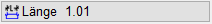
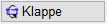
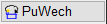
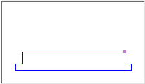

")

Erzeugen von Öffnungen (Durchbrüchen) in Wänden.
Folienbelegung: Wenn AutFol eingestellt ist, werden die Linien in Folie 0 abgelegt.
Funktionen |
Beschreibung |
|---|---|
Fenster und Türen einbauen. |
|
Anschlag erzeugen. |
|
Öffnungen in einschalligen Wänden zeichnen. |
|
Fenstermakros öffnen und erzeugen. |
Optionen |
Beschreibung |
|---|---|
 |
Auswahlfenster für die Öffnungsbreite. |
 |
Wechsel des Einfügepunktes zwischen innen und außen. |
 |
Wechsel des Einfügepunktes zwischen rechts und links. |
 |
Vorschau. Darstellung des eingelesenen Objektes bzw. des Ergebnisses der Eingaben des Assistenten. Der Einfügepunkt wird markiert. Die Orientierung wird nach dem Anklicken der Linie erzeugt. |